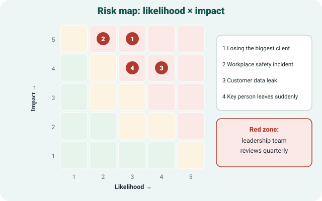

K10 · Digital skills, AI and workplace rules › Level 5 Leading
Risk register, managers' duties and AI governance
This lesson completes Sheet 7: Risk register and AI inventory. Print template. It builds on Turn rules into action (N4) and Lead change and AI adoption (N5). This lesson is not legal advice. Its legal examples come from Vietnam; sources are at the end.
1. Objectives
- Build a 10-line risk register, each risk with an owner, measures and a warning threshold.
- Build the organisation's AI inventory: which systems, what data, who is responsible, where people check.
2. Retrieval warm-up
- What are the three steps when you hear bad news?
- What three things must a bad-news channel state?
Answers
- Thank the person; ask for facts; ask what is needed.
- Which news must arrive within 48 hours; who it passes through; when someone may skip a level.
Review: Hearing weak signals.
3. Explanation
A leadership team cannot track every risk. But it must know the 10 biggest, and each must have an owner.
Write each risk in three parts: cause → event → consequence. "People risk" is not enough. "Two lead engineers leave at the same time, so project X is 3 months late" is usable.

Sheet 7. Each line of the risk register
- RiskCause → event → consequence.
- ScoreLikelihood and impact, from 1 to 5.
- OwnerOne person, with authority to act.
- MeasuresWhat is being done to reduce it.
- Warning thresholdWhat, if seen, goes to the leadership team at once.
The leadership team reviews the register each quarter. A risk that crosses its threshold goes into the bad-news channel from Lesson 6.
Managers' duties. Company law usually sets out the duties of company managers. In Vietnam, for joint-stock companies, this is Article 165 of the Law on Enterprises. In short: carry out your duties honestly and carefully, in the company's interest. Do not use your position, company information or opportunities for personal gain. Disclose your related interests to the company.
Put simply, acting carefully means having a process to know about and deal with major risks. A risk register is part of that process. For your exact duties, read the original law where you work and ask your legal team.
The AI inventory. Many organisations do not know how many AI tools they use. Each line of the inventory records: the system's name; what it is used for; what data goes in, and whether it includes personal data; who is responsible; and at which step a person checks the output.
Vietnam's Artificial Intelligence Law classifies AI systems into three risk levels: high, medium and low. Classifying each system needs your legal team and data protection lead working together.
4. Workplace example
Hypothetical scenario. A listed fashion retailer has 60 stores. The board asks: "What risks is the leadership team worried about?" Nobody gives the same answer.
The CEO, Tony, asks each division director to write 5 risks in three parts. The team combines them, scores them and chooses 10.
One line in the register: Risk: the main fabric supplier in one region is hit by floods, so stock runs short for the holiday season. Score: likelihood 3, impact 5. Owner: purchasing director. Measures: add a supplier in another region for 30% of fabric. Threshold: fabric stock below 6 weeks of sales.
When building the AI inventory, the team finds 3 tools. Marketing uses a content-writing tool. Customer care uses a chatbot. One analyst pastes customer data into a free AI tool on their own.
The third line involves customers' personal data. Tony stops it at once and asks the legal team to review it under the personal data protection law.
Why this works: the risks are specific, with owners and thresholds. The AI inventory uncovers a data risk nobody knew about.
5. Practice
Hypothetical scenario. You are CEO of a logistics company. The company has just started using AI to plan truck routes and to answer customers on the phone line.
Write 2 risk register lines using Sheet 7. Write 2 lines of the AI inventory.
Hint 1
Logistics risks often involve accidents, late deliveries to major clients, and systems going down.
Hint 2
For the customer-answering AI: what customer data goes in? When the AI answers wrongly, who notices?
Model answer
Risk register
- Drivers exceed their hours, so an accident happens. Score 2/5. Owner: transport director. Measures: driving-hour limits in the software. Threshold: one driver exceeds the limit twice in a month.
- The routing system goes down, so deliveries are late all day. Score 2/4. Owner: technology director. Measures: a manual backup routing method. Threshold: the system is down for more than 2 hours.
AI inventory
- Routing AI. Data: delivery addresses, loads, truck locations. Owner: transport director. Check: a dispatcher approves routes before they run.
- Phone-line AI. Data: customer name, phone number, order number. Includes personal data. Owner: head of customer care. Check: staff listen to sample calls each week; customers can always be transferred to a person.
(The details are hypothetical.)
6. Self-check
Choose an answer. Every option has an explanation.
Question 1. Which risk register line is written in all three parts?
-
Not quite. This is only a category. There is no cause, event or consequence.
-
Correct. Correct. It has a cause, an event and a consequence. The owner knows what to watch.
-
Not quite. This is a measure, not a description of a risk.
Question 2. A risk in the register lists its owner as "the leadership team". What is the problem?
-
Not quite. When the whole team owns it, usually nobody really watches it day to day.
-
Correct. Correct. Each risk needs one person who watches it and reports when it crosses the threshold.
-
Not quite. Legal advises on the law. The owner should be someone who can deal with the root cause.
Question 3. While building the AI inventory, you find staff putting candidates' CVs into a free AI tool. What should you do first?
-
Not quite. CVs contain personal data. Putting them into an unapproved tool is a risk.
-
Correct. Correct. Stop to contain the risk, then review it against the personal data rules.
-
Not quite. The organisation may not have clear rules yet. First contain the risk and set rules.
Question 4. Under Vietnam's Law on Enterprises, what duty does a manager of a joint-stock company have?
-
Not quite. The law does not say this. Article 165 is about how duties are carried out, not guaranteed results.
-
Correct. Correct. This is the gist of Article 165. For details, read the original text.
-
Not quite. Not true. Personal liability arises from breaching duties, as the law provides.
7. Reflection
- If the board asked "What are the 3 biggest risks?", would your leadership team give the same answer?
- Do you know every AI tool being used in your organisation?
8. Real-world application
In the next 7 days, ask each division head to write 5 risks in three parts. Combine them into a 10-line risk register. Start the AI inventory by asking each division which tools it uses.
Last updated: 14/11/2026. Sources (example: Vietnam, checked 14/11/2026): Law on Enterprises No. 59/2020/QH14, issued 17/6/2020, in force from 01/01/2021. Amended by Law No. 03/2022/QH15 and Law No. 76/2025/QH15 (issued 17/6/2025, in force from 01/7/2025). Still in force. Article 165 sets out the duties of managers of joint-stock companies. Law on Artificial Intelligence No. 134/2025/QH15, issued 10/12/2025, in force from 01/3/2026. Law on Personal Data Protection No. 91/2025/QH15, passed by the National Assembly on 26/6/2025, in force from 01/01/2026. This lesson only summarises the main points and does not interpret provisions in detail. When applying them, read the latest consolidated text and ask your legal team.
9. Metadata
| skill | K10 · Digital skills, AI and workplace rules |
|---|---|
| level | Level 5 · Leading |
| group | N6 |
| framework_map | APS Integrated Leadership System: Exemplifies personal drive and integrity; DigComp 3.0; WEF: AI and big data; Technological literacy; SkillsFuture CCS: Digital Fluency; CSfW: 1b Work with roles, rights and protocols (reference only) |
| original | Vietnamese version |
| updated | 2026-11-14 |
Finish the lesson
Mark it as done and the site suggests reviews after 1, 3 and 7 days. The data stays on your device only.
Suggested reviews: